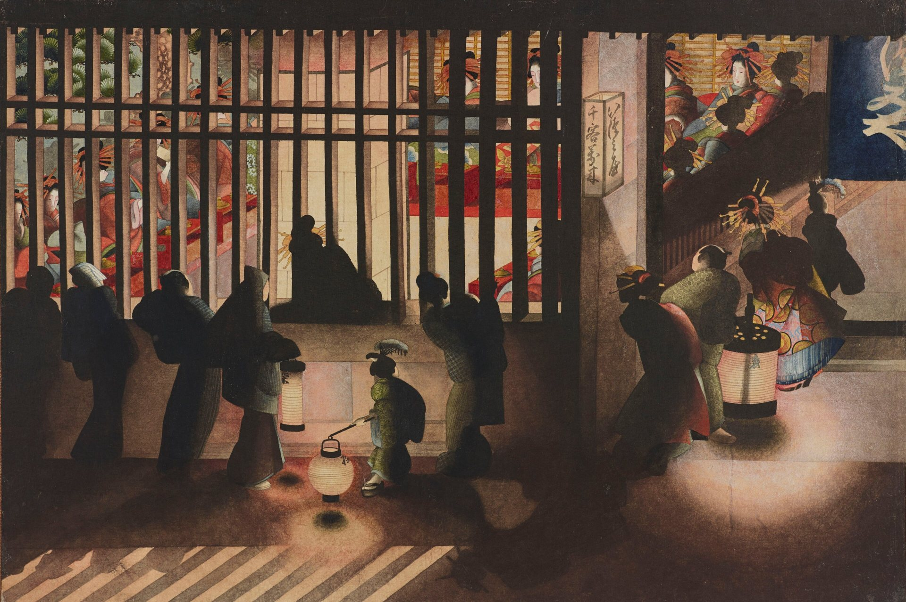
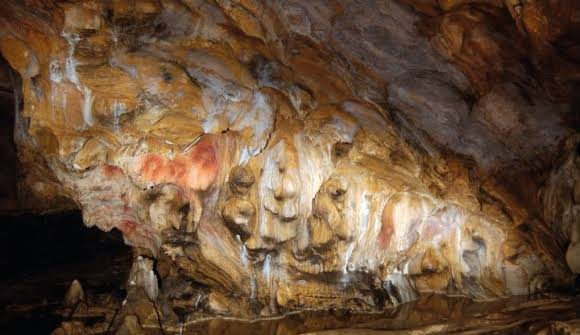
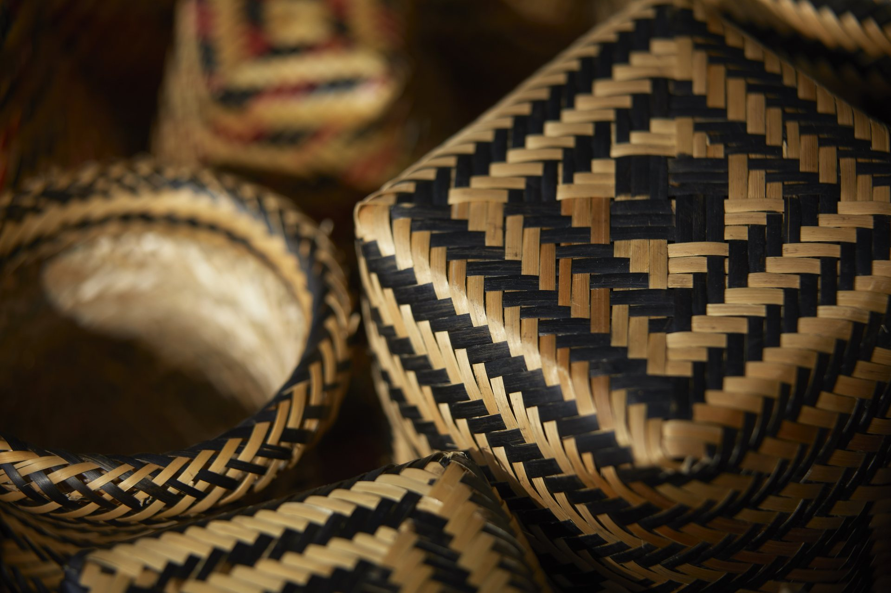
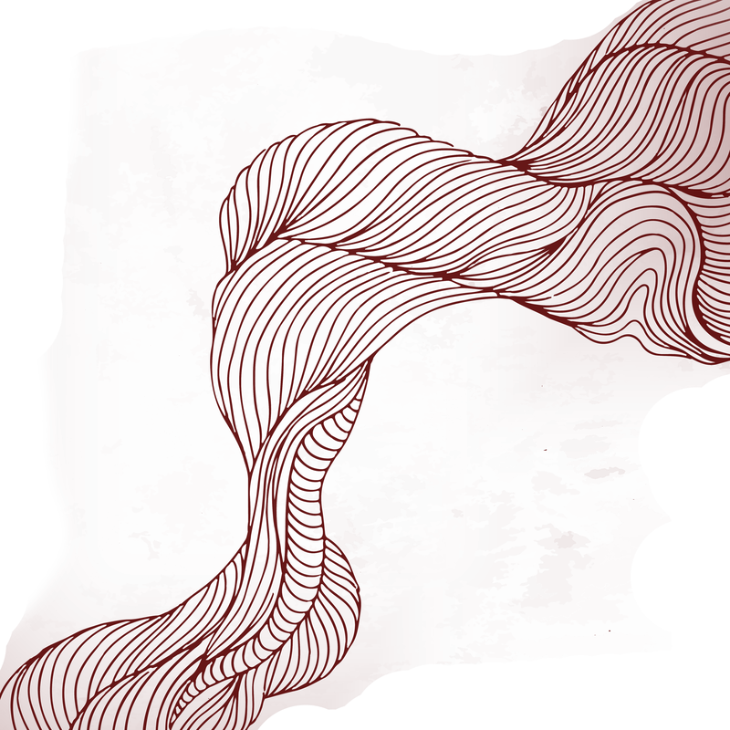
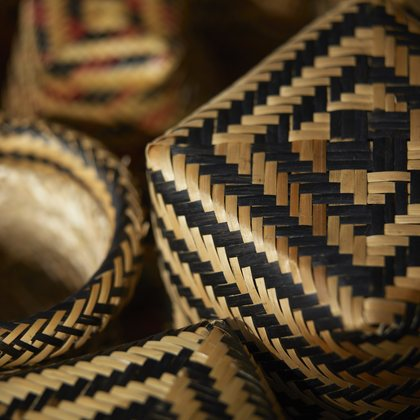
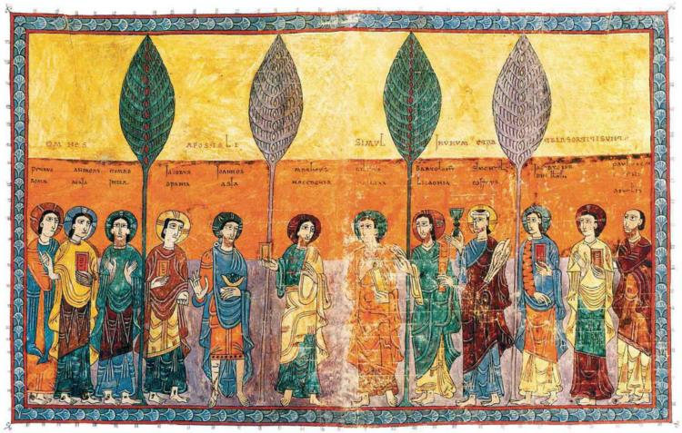
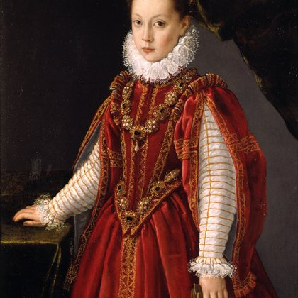

Período Edo
O Período Edo (ou Período Tokugawa) foi a era da história japonesa compreendida entre 1603 e 1868, governada pelo xogunato Tokugawa com sede na cidade de Edo, a atual Tóquio.
Descubra sobre
O Período Edo (ou Período Tokugawa) foi a era da história japonesa compreendida entre 1603 e 1868, governada pelo xogunato Tokugawa com sede na cidade de Edo, a atual Tóquio.
Descubra sobre
O registro da humanidade começa com elas: pesquisas recentes revelam que a maioria das primeiras pinturas em cavernas foi feita por mãos femininas.
Descubra sobre
O signo feminino está na base de tudo: no chão, no território, na mãe-Terra. Conheça as produções e trajetórias das artistas indígenas brasileiras.
Descubra sobre
Este projeto nasce com o propósito de valorizar e dar visibilidade às mulheres que foram peças essenciais na construção da História da Arte. Por meio da nossa linha do tempo, é possível conhecer novas artistas, descobrir diferentes trajetórias e contemplar obras que, muitas vezes, foram pouco reconhecidas ou permaneceram fora dos principais registros da história.
O projeto reúne obras de mulheres de diferentes regiões, períodos históricos e classes sociais, buscando apresentar uma perspectiva mais ampla e diversa sobre a produção artística ao longo do tempo.
Do Minimalismo à arte contemporânea, a presença das mulheres na produção artística tornou-se cada vez mais significativa. Suas produções contribuíram para transformar a maneira como compreendemos a matéria, o espaço, o corpo, a identidade e as experiências individuais e coletivas.
Cerca de 4000 a.C. o registro da humanidade já revela a marca das mulheres. Percorra os períodos e movimentos artísticos para conhecer as artistas por trás de cada um deles.
De acordo com uma pesquisa do Departamento de Antropologia da Universidade do Estado da Pensilvânia (EUA), cerca de 75% das impressões de mãos encontradas em sítios como o de El Castillo, na Espanha, pertenciam a mulheres — não a homens. Gabinete de Prensa del Gobierno de Cantabria, 2008





Do Minimalismo à arte contemporânea, a presença das mulheres na produção artística tornou-se cada vez mais significativa. Suas produções contribuíram para transformar a maneira como compreendemos a matéria, o espaço, o corpo, a identidade e as experiências individuais e coletivas.
Nossa marca como artistas está presente desde o inicío da história da humanidade. Conhecer essas produções é também compreender como a arte se transforma quando novas vozes passam a ocupar seu espaço.